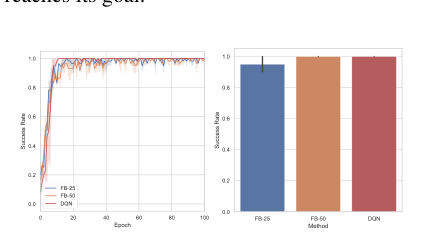
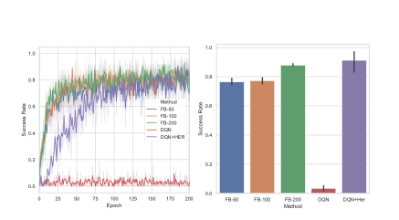
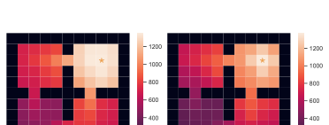
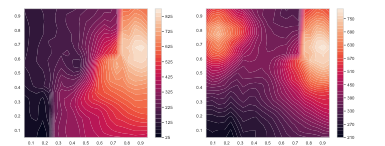
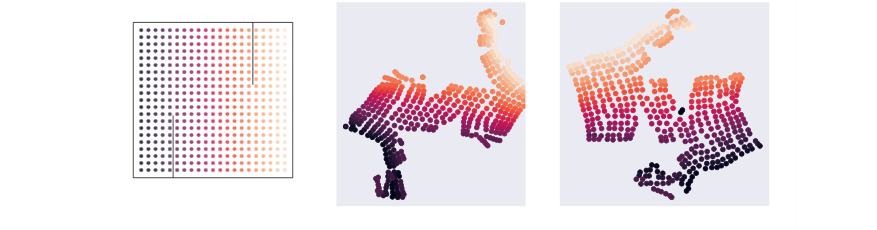

Background & Motivation
提出 Forward-Backward (FB) representation:在「無獎勵」探索階段先學出兩個表徵 F、B,事後不論給定任何 reward,都能不重新訓練、不做規劃,直接用一條公式算出近似最優策略。等於把「環境裡所有規劃問題的解答」壓縮進一個可學習的物件裡。
Introduces the Forward-Backward (FB) representation: during a reward-free exploration phase, learn two representations F and B, so that for any reward specified later you get a near-optimal policy from a single formula—no retraining, no planning. In effect it compresses "the solutions to all planning problems in the environment" into one learnable object.
如果只有 30 秒In 30 seconds
- 問題 — 能不能先不看獎勵地探索環境,學一個緊湊物件,事後任給 reward 就立刻吐出最優策略?
- Problem — Can we explore an environment reward-free, learn one compact object, and then instantly produce an optimal policy for any reward given afterward?
- 方法 — 利用「Q 值對 reward 是線性的」這個代數事實,把 successor measure 做低秩分解 \(M^\pi \approx F^\top B\);reward 一到,投影成 \(z_R=\mathbb{E}[r\,B]\),策略就是 \(\arg\max_a F(s,a,z_R)^\top z_R\)。
- Method — Exploit the algebraic fact that Q is linear in reward, and low-rank factorize the successor measure \(M^\pi \approx F^\top B\); once a reward arrives, project it to \(z_R=\mathbb{E}[r\,B]\) and the policy is \(\arg\max_a F(s,a,z_R)^\top z_R\).
- 結果 — 在迷宮、機械臂、像素版小精靈上,跟 goal-oriented 的 DQN/HER 打平甚至更快,還能即時做到 HER 做不到的任務(避開禁區、就近選目標)。
- Results — On mazes, a robot arm, and pixel-based Ms. Pacman, it matches or beats goal-oriented DQN/HER, and also solves—in real time—tasks HER cannot (avoiding forbidden regions, reaching the nearest of several goals).
領域脈絡Field context
這篇處理的是一種特殊的unsupervised reinforcement learning:給定一個馬可夫決策過程(MDP)但沒有任何 reward 訊號,問能否學並儲存一個緊湊物件,使得對事後才指定的任何 reward,只需極少額外計算就給出最優策略。
This tackles a special kind of unsupervised reinforcement learning: given a Markov decision process (MDP) but no reward signal, can we learn and store a compact object that, for any reward specified later, yields the optimal policy with minimal extra computation?
作者沿用了 [BBQ+18] 的策略參數化 \(\pi_z(s)=\arg\max_a F(s,a,z)^\top z\),但把核心表徵從「successor features」換成successor states 的占據機率(occupancy),並借用 [BTO21] 的 successor-state 學習理論。
The authors reuse [BBQ+18]'s policy parameterization \(\pi_z(s)=\arg\max_a F(s,a,z)^\top z\), but swap the core representation from "successor features" to successor-state occupancy, building on the successor-state learning of [BTO21].
這是「先建地圖、再隨點隨走」的思路。傳統 RL 是「給目標→學一個策略」,換目標要重學;這篇想要的是「先把環境的動態結構學成一張通用地圖,任何目標都從地圖上即時導航」。關鍵賭注:環境的動態(transition)其實比某個特定 reward 的解更值得、也更可能被一次學好。
It's a "build the map first, then navigate to any point on demand" idea. Classic RL is "give a goal → learn one policy," and changing goals means relearning. Here the aim is "learn the environment's dynamics into a universal map, then navigate to any goal in real time." The bet: the environment's transition structure is both more worthwhile and more learnable-in-one-shot than the solution to any single reward.
核心洞見 · KEY INSIGHTSKEY INSIGHTS
這篇真正值得帶走的不是某個演算法,而是底下這幾個觀念——它們可以遷移到很多「事後才定義任務」的問題。
What's worth taking away isn't one algorithm but these ideas—transferable to many "task-defined-after-the-fact" problems.
- 獎勵與動態可以解耦。 因為 \(Q^\pi_r=M^\pi r\),最難、最長程的部分 \(M^\pi\)(環境怎麼動)完全與 reward 無關;reward 只進入最後一次線性內積。所以「理解世界」能一次學好,「任務」事後再讀出。這是全篇的地基。
- Reward and dynamics decouple. Since \(Q^\pi_r=M^\pi r\), the hardest, longest-range part \(M^\pi\) (how the world moves) is completely reward-independent; reward enters only in a final linear inner product. So "understanding the world" can be learned once, and "the task" read out afterward. This is the foundation of the whole paper.
- 低秩分解把「所有最優策略」線性化。 強制 \(M^{\pi_z}=F_z^\top B\),等於要求表徵 \(B\) 把最優策略攤平成一個 \(d\) 維線性空間;於是任何 reward 都能用投影 \(z_R=\mathbb{E}[r\,B]\) 取得座標、再 \(\arg\max\) 得到最優策略。
- Low-rank factorization linearizes "all optimal policies." Forcing \(M^{\pi_z}=F_z^\top B\) asks representation \(B\) to flatten optimal policies into a \(d\)-dim linear space; any reward then gets coordinates by projection \(z_R=\mathbb{E}[r\,B]\), and an \(\arg\max\) gives the optimal policy.
- 一個「不用想像狀態」的世界模型。 \(F^\top B\) 逼近的是長期占據機率(occupancy),不是逐步 rollout——因此繞開了 model-based 最痛的「合成軌跡誤差會隨步數累積」問題。
- A world model that never "imagines states." \(F^\top B\) approximates long-term occupancy, not step-by-step rollouts—sidestepping model-based RL's worst pain, the compounding error of synthesized trajectories.
- 低秩 = 內建「長程優先」的歸納偏置。 rank-\(d\) 近似偏好 \(P_\pi\) 的大特徵值(低頻、空間平滑、長程)結構。在沒有 reward 先驗時,這其實是個合理的先驗,也呼應神經科學對 successor representation 的觀察 [SBG17]。
- Low rank = a built-in "long-range first" prior. The rank-\(d\) approximation favors large eigenvalues of \(P_\pi\) (low-frequency, spatially smooth, long-range). Absent a reward prior, this is a reasonable prior, echoing neuroscience views of the successor representation [SBG17].
- 可控 agent 的雛形。 把「探索」與「達成任意目標」分離:先無監督探索建表徵,之後任意任務即時求解。這正是「先理解世界、再聽令行事」的 controllable-agent 範式。
- A prototype controllable agent. It separates "exploration" from "achieving any goal": explore unsupervised to build representations, then solve any task instantly. This is the "understand the world first, then take orders" controllable-agent paradigm.
Problem Diagnosis
現況 vs 痛點Status quo vs pain points
| 現有做法Existing approach | 它的痛點Its pain point |
|---|---|
| Goal-oriented RL (HER 等etc.) | 必須事先指定一組任務/目標;無法即時適應新 reward,例如目標的加權組合、dense reward、或「避開某些狀態」。Must specify a set of tasks/goals in advance; cannot adapt in real time to new rewards—e.g. weighted goal combinations, dense rewards, or "avoid certain states." |
| Model-based RL (學世界模型world models) | 每來一個新 reward 仍要重新規劃(planning);而且長時間尺度下合成準確的狀態軌跡很困難。Every new reward still requires planning; and over long horizons, synthesizing accurate state trajectories is hard. |
核心矛盾:我們想要一個事後可任意指定 reward 的 agent,但現有方法不是「事先綁死任務」,就是「事後仍要昂貴計算」。
The core tension: we want an agent whose reward can be set arbitrarily afterward, but existing methods either "bind the task in advance" or "still pay expensive computation afterward."
Gap 表 — 誰缺什麼,FB 怎麼補Gap table — who lacks what, and how FB fills it
| 方法Method | 限制Limitation | FB 如何補上How FB fills it |
|---|---|---|
| USFA [BBQ+18] successor features |
需使用者事先提供特徵 φ;只能解「對 φ 線性」的 reward;goal-reaching 需無限多 feature。Needs user-provided features φ in advance; only solves rewards linear in φ; goal-reaching needs infinitely many features. | 改用 successor states(占據機率),不需任何使用者輸入,可解非線性 reward 與 goal-reaching。Uses successor states (occupancy) instead, no user input, handles nonlinear rewards and goal-reaching. |
| HER [ACR+17] | 要事先指定 goal 家族;無法事後指定 reward。Must specify a goal family in advance; cannot set reward afterward. | 事後任意 reward 都用 \(z_R=\mathbb{E}[r\,B]\) 即時求解。Any reward, afterward, solved instantly via \(z_R=\mathbb{E}[r\,B]\). |
| Model-based | 需規劃 + 合成狀態軌跡。Needs planning + synthesized state trajectories. | 零規劃、不合成狀態,直接一條公式給策略。Zero planning, no state synthesis—a single formula gives the policy. |
注意這三個 baseline 各自的「半套解法」:USFA 解決了「跨 reward 泛化」但要人給特徵;HER 解決了「sparse reward 樣本效率」但要事先定目標。FB 的賣點是把這兩塊缺口一次補上——代價是要學「兩個」表徵(多了一個 backward 表徵 B),以及承擔低秩近似的資訊損失(見 05)。
Note each baseline's "half solution": USFA solves cross-reward generalization but needs hand-given features; HER solves sparse-reward sample efficiency but needs goals defined up front. FB's pitch is filling both gaps at once—at the cost of learning two representations (the extra backward representation B) and bearing the information loss of low-rank approximation (see 05).
Core Method
基石:successor measure 與「Q 對 reward 線性」Foundation: successor measure & "Q is linear in reward"
先定義 successor measure \(M^\pi\)——跟著策略 \(\pi\) 走,折扣後落在每個狀態-動作集合 \(X\) 的期望(折扣)次數:
First define the successor measure \(M^\pi\)—the expected discounted time spent in each state-action set \(X\) when following policy \(\pi\):
關鍵代數事實:任何策略的 Q 函數,對 reward 都是線性的。把 \(M^\pi\)、\(r\) 視為(以狀態-動作為索引的)矩陣與向量:
The key algebraic fact: any policy's Q-function is linear in the reward. Treating \(M^\pi\) and \(r\) as a matrix and vector indexed by state-actions:
這就是全篇的支點:困難、長程的部分 \(M^\pi\) 完全與 reward 無關,reward 只在最後做一次線性內積。
This is the fulcrum: the hard, long-range part \(M^\pi\) is entirely reward-independent; reward enters only via a final linear inner product.
核心招式:低秩分解 \(M^{\pi_z}=F_z^\top B\)Core move: low-rank factorization \(M^{\pi_z}=F_z^\top B\)
引入一族由 \(z\in\mathbb{R}^d\) 參數化的策略 \(\pi_z\),並尋找表徵使 successor measure 對每個 \(z\) 都能分解。一旦成立,Q 也跟著分解:
Introduce a family of policies \(\pi_z\) parameterized by \(z\in\mathbb{R}^d\), and seek representations that factorize the successor measure for every \(z\). Once they hold, Q factorizes too:
把策略定義為 \(\pi_z(s):=\arg\max_a F(s,a,z)^\top z\),並對給定 reward 設 \(z_R:=Br=\mathbb{E}_{(s,a)\sim\rho}[\,r(s,a)\,B(s,a)\,]\)。代入可得 \(Q^{\pi_{z_R}}_r=F_{z_R}^\top z_R\)。
Define the policy as \(\pi_z(s):=\arg\max_a F(s,a,z)^\top z\), and for a given reward set \(z_R:=Br=\mathbb{E}_{(s,a)\sim\rho}[\,r(s,a)\,B(s,a)\,]\). Substituting gives \(Q^{\pi_{z_R}}_r=F_{z_R}^\top z_R\).
於是 \(\pi_{z_R}\) 恰好是它自己 Q 函數的 greedy policy——也就是 reward \(r\) 的最優策略。條件「\(\pi_z=\arg\max F_z^\top z\) 且 \(F_z^\top B=M^{\pi_z}\)」是個完全無監督的 fixed-point:F、B 定義了 \(\pi_z\),\(\pi_z\) 又決定了要逼近的 \(M^{\pi_z}\)。
So \(\pi_{z_R}\) is exactly the greedy policy of its own Q-function—hence the optimal policy for reward \(r\). The condition "\(\pi_z=\arg\max F_z^\top z\) and \(F_z^\top B=M^{\pi_z}\)" is a fully unsupervised fixed point: F, B define \(\pi_z\), and \(\pi_z\) in turn determines the \(M^{\pi_z}\) to be approximated.
FB representation 的正式定義(Def. 1)The formal FB-representation definition (Def. 1)
給定資料分佈 \(\rho\)。一對函數 \(F:S\times A\times Z\to Z\)、\(B:S\times A\to Z\) 與策略族 \((\pi_z)\),若對所有 \(z\) 與狀態-動作都滿足下列兩條件,即稱為 FB 表徵:
Given a data distribution \(\rho\). A pair \(F:S\times A\times Z\to Z\), \(B:S\times A\to Z\) with a policy family \((\pi_z)\) is an FB representation if, for all \(z\) and state-actions, both conditions hold:
Thm 2:任意有界 reward,取 \(z_R=\int r(s,a)\,B(s,a)\,\rho(\mathrm{d}s,\mathrm{d}a)\),則 \(\pi_{z_R}\) 最優,且最優價值 \(Q^\star(s,a)=F(s,a,z_R)^\top z_R\)。特例:單一目標 \((s,a)\) 時 \(z_R=B(s,a)\)。
Thm 2: for any bounded reward, taking \(z_R=\int r(s,a)\,B(s,a)\,\rho(\mathrm{d}s,\mathrm{d}a)\) makes \(\pi_{z_R}\) optimal, with optimal value \(Q^\star(s,a)=F(s,a,z_R)^\top z_R\). Special case: a single goal \((s,a)\) gives \(z_R=B(s,a)\).
怎麼學 F、B:successor measure 的 TDHow to learn F, B: TD on the successor measure
用參數模型逼近密度 \(m^{\pi_z}_\theta:=F_\theta(s_0,a_0,z)^\top B_\theta(s',a')\approx M^{\pi_z}/\rho\)。\(M^\pi\) 本身滿足一條 Bellman 方程(把抵達自身當「即時項」、未來折扣遞迴):
Approximate the density \(m^{\pi_z}_\theta:=F_\theta(s_0,a_0,z)^\top B_\theta(s',a')\approx M^{\pi_z}/\rho\) with a parametric model. \(M^\pi\) itself obeys a Bellman equation (reaching itself as the "immediate" term, future discounted recursively):
借 [BTO21] 的 TD 更新(不需 sparse reward,連續空間照樣可用):取一筆轉移 \((s_0,a_0,s_1)\)、\(a_1\sim\pi(s_1)\),以及獨立取樣的 \((s',a')\),更新 \(\theta\leftarrow\theta+\eta\,\delta\theta\):
Borrow [BTO21]'s TD update (no sparse reward needed, works in continuous spaces): take a transition \((s_0,a_0,s_1)\), \(a_1\sim\pi(s_1)\), and an independently sampled \((s',a')\), then update \(\theta\leftarrow\theta+\eta\,\delta\theta\):
實作細節:每步隨機抽一個 \(z\sim\) rescaled Gaussian(抽再多也不耗訓練樣本);用 target network(Polyak 平均,如 DDPG)穩定右側;訓練時把硬性 greedy 換成 \(\pi_z=\mathrm{softmax}\big(F(s,a,z)^\top z/\tau\big)\);並對 \(B\) 加正規化以解 \(F,B\) 之間的不可辨識性。
Implementation: each step samples a \(z\sim\) rescaled Gaussian (sampling more costs no training data); a target network (Polyak averaging, à la DDPG) stabilizes the right-hand side; during training the hard greedy is replaced by \(\pi_z=\mathrm{softmax}\big(F(s,a,z)^\top z/\tau\big)\); and \(B\) is normalized to resolve the \(F,B\) unidentifiability.
三階段使用流程Three-phase usage
| 情境Scenario | 怎麼設 \(z_R\)How to set \(z_R\) |
|---|---|
| 已知目標狀態 \((s,a)\)Known goal state \((s,a)\) | \(z_R=B(s,a)\) |
| 到達 \(g_0\) 並避開禁區 \(g_1,\dots,g_k\)Reach \(g_0\), avoid forbidden \(g_1,\dots,g_k\) | \(z_R=B(g_0)-\lambda\sum_{i} B(g_i)\) |
| 黑箱 / 取樣式 rewardBlack-box / sampled reward | 跑探索策略,對訪到的狀態平均 \(r(s,a)\,B(s,a)\)Run exploration, average \(r(s,a)\,B(s,a)\) over visited states |
符號白話對照Symbols in plain words
| \(F\) | 一個狀態-動作的「未來」表徵(從這裡出發會走向哪些未來)。A state-action's "future" representation (which futures you head toward from here). |
| \(B\) | 「如何抵達」某狀態的表徵。\(F^\top B\) 大 \(\Rightarrow\) 第二個狀態容易從第一個到達。A representation of "how to reach" a state. Large \(F^\top B\) \(\Rightarrow\) the second state is easily reached from the first. |
| \(M^\pi\) | successor measure:跟著 \(\pi\) 走,折扣後在各 \((s,a)\) 停留的期望時間。像一張「未來足跡熱度圖」Successor measure: discounted expected time spent at each \((s,a)\) following \(\pi\). like a "future-footprint heatmap" |
| \(z\) | 表徵空間 \(\mathbb{R}^d\) 裡的一個向量,既當策略的參數,也當 reward 的「座標」。A vector in representation space \(\mathbb{R}^d\), serving both as the policy's parameter and the reward's "coordinate." |
| \(z_R\) | 把 reward 投影到 \(\mathbb{R}^d\) 後的壓縮座標 \(=\mathbb{E}[r\,B]\)。The reward's compressed coordinate after projecting to \(\mathbb{R}^d\), \(=\mathbb{E}[r\,B]\). |
| \(d\) | 表徵維度,控制「能同時解多少種 reward」。d 越大越精確但越貴Representation dimension—controls "how many reward types can be solved well." larger d = more accurate but costlier |
Experimental Evidence
主結果 — 對比 goal-oriented baseline(成功率)Main results — vs goal-oriented baselines (success rate)
| 環境Environment | 狀態空間State space | FB 表現FB result | 對照Comparison |
|---|---|---|---|
| Discrete Maze 四房間 gridworldfour-room gridworld | one-hot | d=75 接近最優d=75 near-optimal | d=25 退化degrades:低秩平滑使 agent 常停在目標旁邊: low-rank smoothing makes the agent stop next to the goal |
| Continuous Maze | (x,y) 連續(x,y) continuous | ✓ 達標solved | — |
| FetchReach 模擬機械臂simulated robot arm | 10 維10-dim | d 夠大時打平 DQNmatches DQN at large d | 表現隨 d 單調上升performance rises monotonically with d |
| Ms. Pacman 像素 84×84×4pixels 84×84×4 | 影像images | 比 DQN+HER 更快faster than DQN+HER | DQN 完全失敗totally fails,要加 HER 才動;FB 用 d≈100 即可; needs HER to work at all; FB needs only d≈100 |
所有環境跑 800 epochs × 3 seeds。樣本效率沒有比 goal-oriented baseline 差,Pacman 上甚至更好。
All environments run 800 epochs × 3 seeds. Sample efficiency is no worse than the goal-oriented baselines, and better on Pacman.


維度 d 的影響(等同 ablation)Effect of dimension d (an ablation)
| 設定Setting | 現象Phenomenon | 代表什麼What it means |
|---|---|---|
| d 太小 (=25)d too small (=25) | reward / Q 值空間模糊化,停在目標旁reward / Q-value blurring, stops beside the goal | 低秩近似偏好「長程、低頻」結構,犧牲了精確定位low-rank approximation favors "long-range, low-frequency" structure, sacrificing precise localization |
| d 中等 (=75)d medium (=75) | 離散迷宮正常運作discrete maze works fine | 多數導航任務的甜蜜點a sweet spot for most navigation tasks |
| d≈100 | 能處理像素級 Pacman 的巨大狀態空間handles pixel-Pacman's huge state space | d 與環境複雜度、而非狀態數,掛鉤d scales with environment complexity, not state count |

質性結果 — goal-oriented 模型「事後做不到」的任務Qualitative — tasks goal-oriented models can't do afterward
以下全部即時計算、零再訓練,只靠改變 \(z_R\):
All of the following are computed in real time, zero retraining, just by changing \(z_R\):
- 避開禁區:\(z_R=B(g_0)-\lambda\sum_i B(g_i)\),成功繞過禁止區域抵達目標。
- Avoid forbidden regions: \(z_R=B(g_0)-\lambda\sum_i B(g_i)\) successfully detours around forbidden areas to the goal.
- 就近選目標:\(z_R=B(g_0)+B(g_1)\),agent 走向較近那個(注意:最優 Q 不是兩個 Q 的線性組合,所以這非平凡)。
- Reach the nearest goal: \(z_R=B(g_0)+B(g_1)\), the agent heads to the closer one (note: the optimal Q is not a linear combination of the two Qs, so this is non-trivial).
- 小近 vs 大遠 reward:正確權衡距離與報酬。
- Small-near vs large-far reward: correctly trades off distance against reward.

把 F、B embedding 用 t-SNE 投到 2D(Continuous Maze):牆會顯示成「凹陷」,凹陷大小對應「繞過這道牆要幾步」——說明表徵真的學到了環境的幾何與動態。
Projecting the F, B embeddings to 2D via t-SNE (Continuous Maze): walls appear as "dents", whose size matches "how many steps to get around the wall"—evidence the representations truly capture the environment's geometry and dynamics.

Critical Reading
可被質疑的點Contestable points
- 資訊損失是結構性的:reward 被壓成 d 維 \(z_R=\mathbb{E}[r\,B]\),任何與 \(B\) 不相關的 reward 一律被當成 0。理論上要精確需 \(d>|S||A|\),連續空間只能靠「加大 \(d\)」逼近——那「\(d\) 要多大才夠」缺乏實務指引。
- Information loss is structural: reward is compressed into d-dim \(z_R=\mathbb{E}[r\,B]\), and any reward uncorrelated with \(B\) is treated as 0. Exactness in theory needs \(d>|S||A|\); continuous spaces only approximate by "growing \(d\)"—and "how large \(d\) must be" lacks practical guidance.
- 環境選擇可能對 FB 有利:低秩近似天生偏好長程、空間平滑(低頻)的 reward。實驗清一色是導航/位置任務,正好落在 FB 的舒適圈;對「局部、高頻、語意」reward 的弱點沒有被壓力測試。
- Environment choice may favor FB: low-rank approximation inherently prefers long-range, spatially smooth (low-frequency) rewards. The experiments are uniformly navigation/position tasks—squarely in FB's comfort zone; its weakness on "local, high-frequency, semantic" rewards is never stress-tested.
- variance 隱患被輕輕帶過:作者自承大環境中「取樣兩個獨立 (s,a) 多半不相關」會使 variance 爆掉,但說「實驗中沒遇到」——很可能只是因為環境還不夠大。
- The variance risk is brushed off: the authors admit that in large environments "two independently sampled (s,a) are mostly unrelated," blowing up variance, but say "we didn't hit it"—likely just because the environments aren't large enough.
- exploration 被排除在外:整套方法的品質上限,其實由「餵進來的探索資料好不好」決定,而這篇直接假設有好的探索。
- Exploration is excluded: the method's quality ceiling is actually set by "how good the exploration data is," yet the paper simply assumes good exploration.
給讀書會 / 審稿的犀利問題Sharp questions for a reading group / review
- 公平性:FB 學了「所有 reward」,baseline 只學「指定 goal」。在固定計算預算下比成功率,對 baseline 公平嗎?
- Fairness: FB learns "all rewards," the baselines only "a specified goal." Under a fixed compute budget, is comparing success rates fair to the baselines?
- cherry-pick?:若拿一個刻意「高頻、非平滑」的 reward(如棋盤格獎勵),FB 會不會大幅落後?
- cherry-pick?: with a deliberately "high-frequency, non-smooth" reward (e.g. a checkerboard reward), would FB fall far behind?
- 維度 d:除了「越大越好」,有沒有原則性的方法事先決定 d?d 與環境的什麼量(譜?內在維度?)掛鉤?
- Dimension d: beyond "bigger is better," is there a principled way to choose d in advance? What environment quantity (spectrum? intrinsic dimension?) does d track?
- baseline 強度:2021 年的對照是 DQN/HER。對上更現代的 offline RL 或 contrastive 表徵法,FB 還站得住嗎?
- Baseline strength: the 2021 comparison is DQN/HER. Against more modern offline RL or contrastive representation methods, does FB still hold up?
- B 的可解釋性:作者說 F、B「可能有更廣的用途」,但除了 t-SNE 看牆,有沒有定量證據說明這些表徵可遷移?
- Interpretability of B: the authors say F, B "may have broader uses," but beyond t-SNE showing walls, is there quantitative evidence these representations transfer?
Takeaways
對你研究的啟發Implications for your research
- 「Q 對 reward 線性 → 低秩分解 successor measure」是一個可遷移的工具觀點。任何「想一次學好、事後再投影任務」的問題,都可借這個框架思考。
- "Q is linear in reward → low-rank factorize the successor measure" is a transferable tool. Any "learn once, project the task afterward" problem can be framed this way.
- \(z_R=\mathbb{E}[r\,B]\) 的「reward 投影」是極優雅的 zero-shot transfer 機制——值得借用到推薦、控制等「任務事後才定」的場景。
- The "reward projection" \(z_R=\mathbb{E}[r\,B]\) is an elegant zero-shot transfer mechanism—worth borrowing for recommendation, control, and other "task-defined-late" settings.
- 追蹤這條研究線:FB 是後續 zero-shot RL / unsupervised RL benchmark 的起點,作者(Touati）後續工作把它推到更大規模,值得順藤摸瓜。
- Follow this research line: FB is the starting point for later zero-shot / unsupervised RL benchmarks; Touati's follow-up work scales it up—worth tracing forward.
值得引用的點What's worth citing
| 當你要主張…When you claim… | 就引這篇Cite this for |
|---|---|
| 「unsupervised / zero-shot RL 是可行的」"unsupervised / zero-shot RL is feasible" | 作為「事後任意 reward、零規劃」的代表性正面證據。A flagship positive example of "any reward afterward, zero planning." |
| 「successor states 優於 successor features」"successor states beat successor features" | 對比 [BBQ+18],說明不需使用者特徵、可解非線性 reward。Contrast with [BBQ+18]: no user features, handles nonlinear rewards. |
| 「低秩表徵會偏好長程/低頻結構」"low-rank representations favor long-range/low-frequency structure" | 引用其 d 過小導致空間模糊的觀察(Fig. 3)。Cite the observation that too-small d causes spatial blurring (Fig. 3). |
FB representation 把「一個 reward-free MDP 的所有最優策略」壓縮成一對可學習表徵——用一次無監督訓練,換來對任意事後 reward 的即時近似最優解。它沒解決探索,但在「探索之後」重新定義了「規劃」的代價:趨近於零。
The FB representation compresses "all optimal policies of a reward-free MDP" into a pair of learnable representations—trading one unsupervised training run for instant, near-optimal solutions to any reward specified later. It doesn't solve exploration, but it redefines the cost of "planning" after exploration: nearly zero.